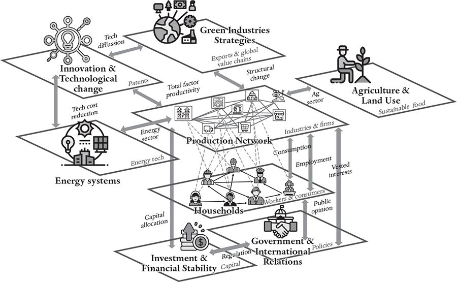

As I write, we are in a period of high inflation and everyone is concerned about prices. Wages aren’t keeping up. Unemployment remains low, which is a good thing, but it may be fueling inflation. The US Federal Reserve is raising interest rates, trying to do a balancing act to calm inflation without causing unemployment to soar and send us into a recession. The pundits are debating: Is inflation just temporary or will it be persistent? How much do we need to raise interest rates? Are there other policy levers besides interest rates that could achieve these goals more effectively? If so, how should we use them? Controlling inflation requires understanding the interaction of many different factors – the money supply, lending, inequality, supply chains, oil prices and foreign investment, among others. To properly control inflation, we need models that take all these factors into account, in order to understand how they will respond to the policy levers the government can wield.
Inflation is the problem of the moment, but, as we move through the business cycle, the economy keeps presenting us with new problems. Agent-based models will eventually prove a better guide than the mainstream tools currently available, but this requires taking them to a new level. Existing macroeconomic agent-based models – for example, the EURACE model built by Herbert Dawid’s group in Bielefeld, the Keynes-Schumpeter model built by Giovanni Dosi’s group in Pisa, and the pioneering series of models built by the ‘Italian cats’ Domenico delli Gatti and Mauro Gallegati – model the economy in considerable detail and have provided useful insight into many macroeconomic questions, but they remain qualitative rather than quantitative tools.1 They can tackle problems like inflation and the causes of business cycles for a hypothetical economy but not for a specific economy at a specific time. Building on earlier models, Sebastian Poledna and his collaborators have recently developed an agent-based model that was used to make quantitative predictions for the Austrian economy.2 They tested it head-to-head against the best DSGE models for Austria and showed that its predictions were roughly as good. The Bank of Canada is now using a further-developed version of this model in-house. But as already noted, the performance of DSGE models is poor – we need to do better.3
Several groups, including mine, are working to build agent-based models that can out-predict DSGE models. Our new model incorporates several innovative features: For example, rather than using a representative household, it features a demographically accurate synthetic population with millions of households (matching age, education, race and consumption habits). Instead of using a representative firm, we model the behavior of tens of thousands of the largest firms, in one-to-one correspondence with real firms. Instead of modeling a single country, we use the fifty-or-so countries where data is available, making it possible to track economic disruptions as they ricochet around the globe.
Our new model aspires to match all the properties of the economy as accurately as the data allow and is both a microeconomic and macroeconomic model at the same time. It can predict key indicators, like aggregate unemployment, but it can also make micro-predictions, like the effects on a particular industry, or even a particular firm in a given industry. It will allow us to predict distributional properties, like how a given policy will affect inequality or how inequality affects economic output, with far more fidelity than any existing macroeconomic model.
Building models like this is not easy. It requires the acquisition and curation of many large data sets to ground the model and test that it is working properly. It requires the development and maintenance of software libraries to implement models and incrementally improve them. It requires ample cloud-computing resources to run and test models. It requires a large team of researchers who have the necessary skills and domain knowledge to monitor model performance, diagnose failures and correct them. The resources needed to do all this properly are substantial, but as we will discuss in the final chapter, the payoff could be huge.
Since the 1970s, economic inequality has grown in many developed countries, particularly in the United States and Great Britain. For half a century, American workers have gotten poorer: US real wages for ordinary (non-supervisory) workers are lower than they were in 1970. Over the same time period, the income of the top 0.1 per cent has grown fivefold, to more than $5,000,000.4 The good news is that the economic gap between developed and developing countries has diminished, although the disparity remains enormous. Mexico’s GDP per capita, for example, is only one-sixth of that of the United States, and the GDP per capita of many African countries is much smaller. Inequalities create friction between the haves and have-nots that eats away at the fabric of society. A certain level of inequality is arguably inevitable, but for our global civilization to function well, and fairly, it needs to be reduced to sensible levels.5
As inequality continues to disrupt society, economists like Thomas Piketty and others have shown that government policies can have unintended side-effects that exacerbate the problem.6 There are overt examples, such as the 2008 financial crisis, when the US government bailed out banks while homeowners with subprime mortgages were left hanging. But there are many other, less obvious examples, like quantitative easing programs, in which central banks buy up bonds or other assets to control interest rates and stimulate the economy. While this might accomplish macroeconomic goals, it can have the undesirable side-effect of increasing inequality (quantitative easing lowers interest rates, which boosts the stock market while doing nothing for the poor). To gain a full understanding of any policy, we need to consider its implications for all the parts of the economy.
Understanding inequality has recently become a hot topic in mainstream economics, but standard theoretical models struggle to provide reliable quantitative answers; they cannot properly incorporate inequality without sacrificing verisimilitude in other ways. HANK models replace the representative household of other DSGE models (see Chapter 5) with a continuum of representative households with different earning power, ranging from poor to rich. These models can incorporate effects such as the fact that rich households have a much higher savings rate than poor ones. But, while the HANK models incorporate inequality, they do so only crudely, and they do not include other essential features of the economy, such as the heterogeneity of the production network.
Agent-based models, in contrast, can model inequality effects with little effort. The use of synthetic household populations can capture the full heterogeneity of real households, whose income and wealth can change over time. The ability to accurately predict policy outcomes affecting inequality is one of the biggest strengths of agent-based models.
The use of synthetic households builds on a method called microsimulation that has been used for decades. It sits on the edge of the mainstream – the pioneers of the method never received Nobel Prizes, and microsimulation is not considered a sexy topic in economics research – but it’s a key tool for policy analysis. Microsimulation models are often used, for example, to evaluate the demographic effects of tax policies. A synthetic population is matched to the real population, and the model then simulates how tax policies affect the balance sheet of each household.
My group and others are borrowing methods from microsimulation in developing our new agent-based models, but with one essential difference: In a microsimulation model, there’s no feedback between consumers and producers. If consumers spend less as a result of a tax, these models don’t capture the effect this would have on producers, who might cut production and fire workers, thus increasing unemployment, and so on. Agent-based models consistently take the interactions of the various parts of the economy into account. The indirect effects of policies can often be much larger than direct effects.
How does inequality affect growth? Does increasing inequality bring about slower growth, or does it happen the other way around? Or is the relationship between the two context-dependent? There’s a tradeoff between the two effects: Growth requires investment, but it also requires consumers. When wealth becomes too concentrated, there is plenty of capital but less consumption. But if wealth becomes too equal, many believe the economy will stall due to lack of investment capital. Inequality also affects interest rates and inflation – concentrating wealth takes money out of circulation, which is deflationary. This may be an important cause of the low inflation and interest rates of the past two decades.
Properly understanding inequality requires good quantitative models, and our new agent-based models should be able to accomplish this.7 By using synthetic populations, we can precisely understand who will be the winners and who will be the losers from changes in policies. Agent-based modeling offers the possibility of creating a digital laboratory where any proposed new policy can be debugged, and its effect on inequality understood, before it’s implemented. This could reduce poverty and unemployment, and save governments from painful mistakes with disastrous effects on the poor.
Chapters 10 and 11 discussed how monitoring market ecology could help regulators do a better job of keeping the financial system on a steady course. The regulators in almost all developed countries could easily gather the data to monitor the balance sheets for every actor in the system. As my graduate student Maarten Scholl demonstrated in his thesis, it is possible to classify market participants according to their trading strategies.8 As predicted by my theory of market ecology (see Chapter 10), monitoring the wealth invested in each type of strategy would enable regulators to know when destabilizing trading strategies are becoming large enough to cause problems. The ability to accurately simulate markets, as demonstrated by Aymeric Vie (with help from Maarten), could be immensely valuable. As already mentioned, having such a financial laboratory could allow us to evaluate new financial instruments and avoid financial crises.
While the 2008 financial crisis caused many problems within the financial system, even greater damage was inflicted on the economy as a whole. To understand how disruptions flow back and forth between the financial system and the real economy, we need to merge models of financial crises with macroeconomic models. This requires building detailed maps for how funding flows from the financial system to the real economy, linking the digital laboratory for the financial system with the digital laboratory for the real economy. This isn’t difficult to do conceptually, but it requires gathering an enormous amount of data. As before, the task is substantial but the rewards could be far bigger.
Financial disasters have global effects. So do other kinds of disasters: The Fukushima earthquake and tsunami, Hurricane Katrina, the COVID pandemic and the war in Ukraine are only a few recent examples. Even local events, like Fukushima, can have effects that are felt around the world because of their links to the global production network. The economics of disasters are very different from ordinary economic behavior – the economic shocks from disasters tend to be large, localized and sudden. Though each disaster is unique – Zeus is capricious – the responses to them are similar: Disasters cause disturbances in supply and/or demand, producing shortages of specific goods and services, which in turn cause disruptions to production, and so on.
Our model for the impact of the COVID pandemic on the UK economy, discussed in the Prologue, provides a template for modeling the economic consequences of disasters in general. That model allows us to anticipate how the shocks caused by a disaster will propagate through the economy, predict how much damage will be caused and explore strategies for mitigating that damage. Because disasters often directly affect only a few specific industries and geographic locations, aggregate models are of little use – there are many devils in the details that require fine-grained models to understand. Our original model was constructed at the level of fifty-five industries and was based on a few representative households. With sufficient resources, we can create a model at the level of individual firms with a demographically and geographically accurate synthetic population. Such a model would not only be more accurate but would answer many more questions.
Disasters happen quickly and are usually unexpected, leaving little time to build new models. One instead wants a library of models that are ready to go, or can at least be quickly refitted for a new situation. Good disaster models would also allow us to anticipate the likely harm from future disasters, such as more intense hurricanes due to climate change, and plan to minimize their effect.
As discussed in Part IV, the changing climate is probably the most urgent problem humanity as a whole has ever faced. While the data-driven techniques described there are useful tools, they address only a small part of the problem. To help guide us through the necessary green-energy and agriculture transition, we need models that can help us plan. How should a country best develop its economy to profit from the transition? What is the right strategy for a business to position itself to take advantage of the new economy? Navigating these questions requires a better understanding of how the transition will play out for the many facets of the economy, including energy, agriculture, innovation, finance, production and labor.
To try to answer these questions, my postdocs, students, ex-students and I are designing what we call the Climate Policy Laboratory. The purpose of the Climate Policy Laboratory is to analyze and assess strategies for mitigating climate change in order to transform the global economy as rapidly, fairly and efficiently as we can. It will allow us to evaluate the effectiveness of the various strategies available to decision-makers at levels ranging from households to firms to nation-states.
Our envisioned Climate Policy Laboratory takes a modular approach. As represented in the schematic diagram below, it’s composed of eight modules, each corresponding to a different facet of the climate-change mitigation problem. These modules can be developed and used by themselves, and tested on their own against real data. They can then be integrated to understand how they interact. For example, the Production Network module affects what happens to industries or firms, and the Households module simulates consumption of their products and the labor supplied to them – each affects the other. When all the modules are used together, they create a fine-grained model for long-range economic growth and political action on a number of scales, which could help guide us through the green-energy transition.

Each module has inputs and outputs that can include physical goods and services and flows of money or information. For most of the modules, outcomes depend on agents, such as government policymakers, business executives or household members. Our goal is to enable decision-makers to understand, in concrete terms, how their actions will affect them and their organizations in the global context of the green-energy transition.
The eight modules of the Climate Policy Laboratory are briefly described below:
We already have prototypes for most of these modules, but it will require substantial resources to develop them for industrial-strength applications, link them together and turn them into practical tools that can be used on a day-to-day basis.
The perceptive reader will have noticed that the proposed models for addressing the big problems have a great deal in common. All of them depend on properly representing firms and industries, and constructing synthetic household populations. The details of the models are different; understanding the short-term economic effects of a hurricane requires a model substantially different from one that anticipates how occupational labor will change over the next twenty years, but those two models also share many components. This creates an economy of scale – aspects of the models can be modular, and therefore may be bolted together as required. Solving one problem makes solving the next problem easier.
Creating a sustainable economy is the biggest challenge facing civilization. Mitigating climate change is an important step, but it is just one of many problems that need to be solved before the economy can operate sustainably without further degrading the biosphere and destroying itself in the process. I believe we can create a prosperous economy with a small environmental footprint, but we don’t understand how to do this. Complexity economics can help guide us.
Tim Jackson and many others say that to have a sustainable economy we need to stop growing, or even have negative growth.12 While I agree that we urgently need to make the economy sustainable as quickly as possible, and I don’t think growth is an important goal for its own sake, I worry it may be counterproductive to pit sustainability against growth. There are too many greedy people, too many vested interests and developing countries are unlikely to embrace policies that leave them behind. Fortunately, I think it is possible to achieve growth and sustainability at the same time.
The green-energy transition provides a good example. While renewable energy does have environmental impacts, these are much smaller than those of fossil fuels. As discussed in Chapter 13, we predict that renewable energy will soon make energy cheaper and cleaner than it has ever been. This will be a boon for everyone, and especially for developing countries. Producing energy will still have some environmental effects, but these will be dramatically reduced.
Growth is traditionally defined in terms of GDP. There are much better indicators of prosperity that could provide superior measuring sticks for well-being, but even GDP suggests that things are improving. GDP has been dematerializing at a rate of about 0.7 per cent per year for many decades, meaning that the weight-per-dollar of real (global) GDP has been declining. As it evolves, the economy is becoming more information and service intensive – in other words, industries making products with small material needs are comprising a larger and larger fraction of the economy – making each unit of GDP more sustainable than it was before. The rate is still too slow to counterbalance the global average long-term growth rate of roughly 2 per cent per year, but if we could double the rate of dematerialization it would only take a 30 per cent reduction in the growth rate to bring the two into balance. Of course, sustainability is about more than material balance, but this is another step in the right direction.
Granular complexity economics models can help us achieve sustainability. The sustainability of a product depends on the sustainability of its inputs. Different firms in the same industry can have very different environmental footprints. To measure sustainability we need to assess the environmental footprint of every firm and product for the entire production network and track the flow of unsustainability through the production network. Complexity economics models that operate on this scale could provide guidance to help us coax the economy into becoming sustainable with a minimum of economic pain.
Another effective way to lower our environmental impact is by reducing global population. Several countries, such as Japan, already have declining populations, and most demographers estimate that the global population will begin to decline before the end of this century. Declining populations place a heavier burden on the young to support the old, with side-effects such as declining housing prices, so it brings problems of its own. As already mentioned, complexity economics models can easily be built with demographically accurate synthetic populations, and could help us better understand how to run an economy with an aging population.
If I am right, and we can show that sustainability and growth are compatible, sustainability will be easier to achieve. If I am wrong, we will need to convince people to stop growing the economy and plan carefully to make de-growth as painless as we can. Either way, complexity economics can help us achieve sustainability as soon as possible.
This chapter has presented a sketch of how agent-based models could be used to help guide us through some of our biggest problems, but what do we need to do to realize this goal, and what economic benefits would it provide?